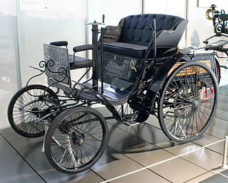
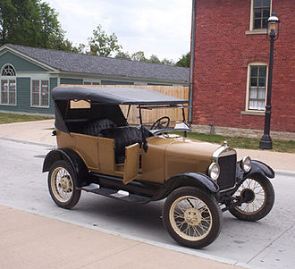

Sejarah Pertamakali Di Temukannya Mobil
Sejarah No.1

Kendaraan pertama yang bekerja dengan uap mungkin pertama kali didesain oleh Ferdinand Verbiest, sekitar tahun 1672. Ia mendesain mainan kendaraaan berukuran 65 cm untuk kerajaan Cina, yang tidak bisa membawa penumpang.[1][2][3] Tidak diketahui apakah model kendaraan yang dibuat Verbiest pernah diproduksi atau tidak.[2] Tahun 1752, Leonty Shamshurenkov, seorang berkebangsaan Rusia, membuat konstruksi sebuah kendaraan bertenaga manusia. Ia juga melengkapi kendaraan buatannya dengan odometer. Kendaraan yang ia buat mirip dengan sebuah kereta salju.[4] Kendaraan tenaga uap pertama dibuat pada akhir abad 18. Nicolas-Joseph Cugnot dengan sukses mendemonstrasikan kendaraan roda tiga itu pada tahun 1769. Kendaraan pertama menggunakan tenaga mesin uap, mungkin peningkatan mesin uap yang paling dikenal, dikembangkan di Birmingham, Inggris oleh Lunar Society. Dan juga di Birmingham mobil tenaga bensin pertama kali dibuat di Britania pada tahun 1896 oleh Frederick William Lanchester yang juga mematenkan rem cakram. Pada tahun 1890-an, etanol digunakan sebagai sumber tenaga di Amerika Serikat.

Sejarah No.2
Paten mobil pertama di Amerika Serikat diberikan kepada Oliver Evans pada 1789; pada 1804 Evans mendemonstrasikan mobil pertamanya, yang bukan hanya mobil pertama di AS tetapi juga merupakan kendaraan amfibi pertama, yang kendaraan tenaga-uapnya sanggup jalan di darat menggunakan roda dan di air menggunakan roda padel. Umumnya mobil pertama mesin pembakaran dalam yang menggunakan bensin dibuat hampir bersamaan pada 1886 oleh penemu Jerman yang bekerja secara terpisah. Karl Benz pada 3 Juli 1886 di Mannheim, dan Gottlieb Daimler dan Wilhelm Maybach di Stuttgart. Pada 5 November 1895, George B. Selden diberikan paten AS untuk mesin mobil dua tak. Paten ini memberi dampak negatif pada perkembangan industri mobil di AS. Penerobosan spektakuler dilakukan oleh Berta Benz pada 1888. Mesin-uap, listrik, dan bensin bersaing untuk beberapa dekade, dengan mesin bensin pembakaran dalam meraih dominasi pada 1910-an. Garis-produksi skala besar pembuatan mobil harga terjangkau dilakukan oleh Oldsmobile pada 1902, dan kemudian dikembangkan besar-besaran oleh Henry Ford pada 1910-an. Dalam periode dari 1900 ke pertengahan 1920-an perkembangan teknologi otomotif sangat cepat, disebabkan oleh jumlah besar (ratusan) pembuat mobil kecil yang semuanya bersaing untuk meraih perhatian dunia. Pengembangan utama termasuk penyalaan elektronik dan self-starter elektronik (keduanya oleh Charles Kettering, untuk Perusahaan mobil Cadillac pada tahun 1910–1911), suspensi independen, dan rem empat ban.
Sejarah No.3
Pada tahun 1930-an, kebanyakan teknologi dalam permobilan sudah diciptakan, walaupun sering diciptakan kembali di kemudian hari dan diberikan kredit ke orang lain. Misalnya, pengemudian roda-depan diciptakan kembali oleh Andre Citroën dalam peluncuran Traction Avant pada 1934, meskipun teknologi ini sudah muncul beberapa tahun sebelumnya dalam mobil yang dibuat oleh Alvis dan Cord, dan di dalam mobil balap oleh Miller (dan mungkin telah muncul pada awal 1897). Setelah 1930, jumlah produsen mobil berkurang drastis berpasan dengan industri saling bergabung dan matang. Sejak 1960, jumlah produsen hampir tetap, dan inovasi berkurang. Dalam banyak hal, teknologi baru hanya perbaikan dari teknologi sebelumnya. Dengam pengecualian dalam penemuan manajemen mesin, yang masuk pasaran pada 1960-an, ketika barang-barang elektronik menjadi cukup murah untuk produksi massal dan cukup kuat untuk menangani lingkungan yang kasar pada mobil. Dikembangkan oleh Bosch, alat elektronik ini dapat membuat buangan mobil berkurang secara drastis sambil meningkatkan efisiensi dan tenaga.